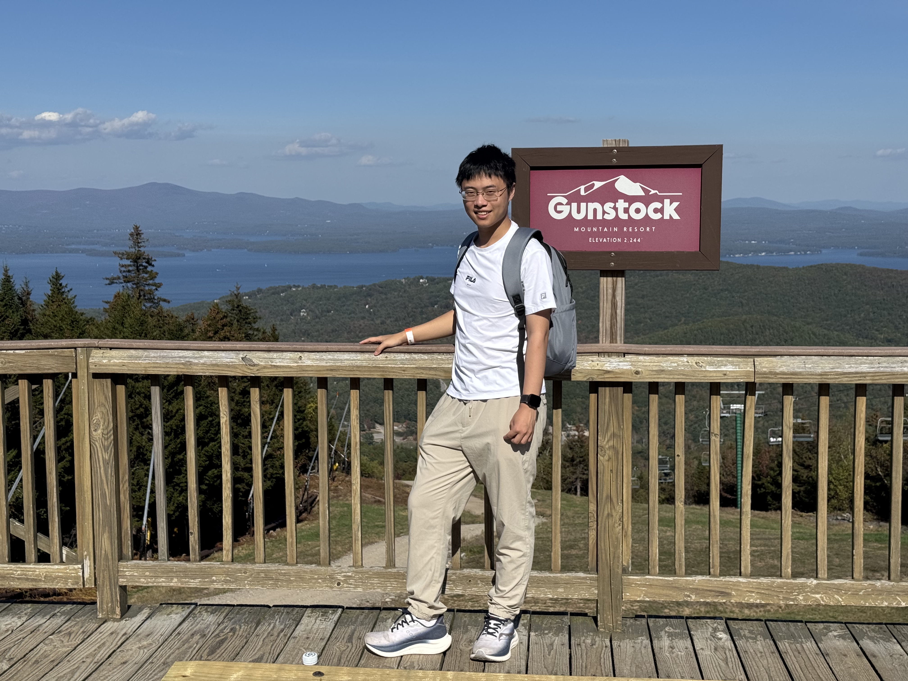

CS Graduate Student at Boston University. Focusing on NLP, LLMs, and Multi-Agent Systems[cite: 7].

I am a researcher and developer passionate about the intersection of Large Language Models and Visual Intelligence. [cite: 8] Currently, I'm exploring how multi-agent workflows can revolutionize software and hardware ecosystems. [cite: 27, 28]
MS in CS @ Boston University [cite: 11]
Diffusion Models, Agentic AI [cite: 7, 36]
Python, Java, C, C++ [cite: 20]
PyTorch, NumPy, scikit-learn [cite: 21]
Machine Learning, NLP [cite: 17]
Git, Linux, Prompt Eng. [cite: 34]
Deal Flow Xchange Inc. [cite: 30]
Xiaohongshu (RED) [cite: 23]
Integrating CLIP and Diffusion Models for improved visual accuracy and semantic consistency. Accepted by NCAW 2024.
Combining Crisscross Search and Sparrow Search for enhanced optimization. Submitted to IJCNN. [cite: 37, 38]
I am always open to discussing AI research, internship opportunities, or interesting projects.